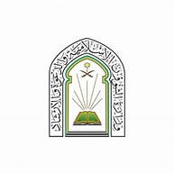

فرع منطقة مكة المكرمة - وحدة الطوارئ والأزمات والكوارث
وحدة الطوارئ والأزمات والكوارث
رؤية المملكة 2030
السلامة والوقاية أولاً
يعتمد مدير وحدة الطوارئ والأزمات والكوارث بالفرع:
م. ناصر بن عبدالرحمن السكتاوي